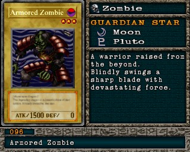

#096 · Monstro
Armored Zombie
ATK1500
DEF0
Nível3
TipoZumbi
AtributoDark
Guardian StarsLua / Plutão
Senha20277860
Star Chips260
Quem dropa no Mod 13
| Duelista | Rank | Chance | Média | |
|---|---|---|---|---|
| Bandit Keith | S/A-TEC | 5,27% 108/2048 | 1 em 19 duelos | |
| Bandit Keith | B/C/D | 2,64% 54/2048 | 1 em 38 duelos | |
| Bandit Keith | S/A-POW | 2,25% 46/2048 | 1 em 45 duelos | |
| 1Heishin 1st | B/C/D | 1,37% 28/2048 | 1 em 73 duelos | |
| 2Heishin 2nd | B/C/D | 1,37% 28/2048 | 1 em 73 duelos | |
| Villager 2 | B/C/D | 1,27% 26/2048 | 1 em 79 duelos | |
| 1Heishin 1st | S/A-TEC | 1,27% 26/2048 | 1 em 79 duelos | |
| 2Heishin 2nd | S/A-TEC | 1,27% 26/2048 | 1 em 79 duelos | |
| Villager 2 | S/A-TEC | 1,22% 25/2048 | 1 em 82 duelos | |
| 1Heishin 1st | S/A-POW | 1,07% 22/2048 | 1 em 93 duelos | |
| 2Heishin 2nd | S/A-POW | 1,07% 22/2048 | 1 em 93 duelos | |
| Rex Raptor | B/C/D | 0,93% 19/2048 | 1 em 108 duelos | |
| B/C/D | 0,88% 18/2048 | 1 em 114 duelos | ||
| B/C/D | 0,88% 18/2048 | 1 em 114 duelos | ||
| B/C/D | 0,88% 18/2048 | 1 em 114 duelos | ||
| Rex Raptor | S/A-POW | 0,78% 16/2048 | 1 em 128 duelos | |
| Rex Raptor | S/A-TEC | 0,78% 16/2048 | 1 em 128 duelos | |
| S/A-POW | 0,78% 16/2048 | 1 em 128 duelos | ||
| S/A-TEC | 0,78% 16/2048 | 1 em 128 duelos | ||
| Labyrinth Mage | B/C/D | 0,78% 16/2048 | 1 em 128 duelos | |
| Villager 2 | S/A-POW | 0,73% 15/2048 | 1 em 137 duelos | |
| S/A-TEC | 0,73% 15/2048 | 1 em 137 duelos | ||
| S/A-TEC | 0,73% 15/2048 | 1 em 137 duelos | ||
| S/A-POW | 0,68% 14/2048 | 1 em 146 duelos | ||
| Labyrinth Mage | S/A-POW | 0,68% 14/2048 | 1 em 146 duelos | |
| Labyrinth Mage | S/A-TEC | 0,68% 14/2048 | 1 em 146 duelos | |
| S/A-POW | 0,68% 14/2048 | 1 em 146 duelos | ||
| Shadi | S/A-TEC | 0,59% 12/2048 | 1 em 171 duelos | |
| Shadi | B/C/D | 0,59% 12/2048 | 1 em 171 duelos | |
| Ocean Mage | S/A-POW | 0,59% 12/2048 | 1 em 171 duelos | |
| Ocean Mage | S/A-TEC | 0,59% 12/2048 | 1 em 171 duelos | |
| Ocean Mage | B/C/D | 0,59% 12/2048 | 1 em 171 duelos | |
| Shadi | S/A-POW | 0,49% 10/2048 | 1 em 205 duelos |
Quem dropa no jogo original
| Duelista | Rank | Chance | Média | |
|---|---|---|---|---|
| Bandit Keith | S/A-TEC | 5,27% 108/2048 | 1 em 19 duelos | |
| Bandit Keith | B/C/D | 5,27% 108/2048 | 1 em 19 duelos | |
| Bandit Keith | S/A-POW | 4,49% 92/2048 | 1 em 22 duelos | |
| 1Heishin 1st | B/C/D | 1,37% 28/2048 | 1 em 73 duelos | |
| 2Heishin 2nd | B/C/D | 1,37% 28/2048 | 1 em 73 duelos | |
| Villager 2 | B/C/D | 1,27% 26/2048 | 1 em 79 duelos | |
| 1Heishin 1st | S/A-TEC | 1,27% 26/2048 | 1 em 79 duelos | |
| 2Heishin 2nd | S/A-TEC | 1,27% 26/2048 | 1 em 79 duelos | |
| Villager 2 | S/A-TEC | 1,22% 25/2048 | 1 em 82 duelos | |
| 1Heishin 1st | S/A-POW | 1,07% 22/2048 | 1 em 93 duelos | |
| 2Heishin 2nd | S/A-POW | 1,07% 22/2048 | 1 em 93 duelos | |
| Rex Raptor | B/C/D | 0,93% 19/2048 | 1 em 108 duelos | |
| B/C/D | 0,88% 18/2048 | 1 em 114 duelos | ||
| B/C/D | 0,88% 18/2048 | 1 em 114 duelos | ||
| B/C/D | 0,88% 18/2048 | 1 em 114 duelos | ||
| Rex Raptor | S/A-POW | 0,78% 16/2048 | 1 em 128 duelos | |
| Rex Raptor | S/A-TEC | 0,78% 16/2048 | 1 em 128 duelos | |
| S/A-POW | 0,78% 16/2048 | 1 em 128 duelos | ||
| S/A-TEC | 0,78% 16/2048 | 1 em 128 duelos | ||
| Labyrinth Mage | B/C/D | 0,78% 16/2048 | 1 em 128 duelos | |
| Villager 2 | S/A-POW | 0,73% 15/2048 | 1 em 137 duelos | |
| S/A-TEC | 0,73% 15/2048 | 1 em 137 duelos | ||
| S/A-TEC | 0,73% 15/2048 | 1 em 137 duelos | ||
| S/A-POW | 0,68% 14/2048 | 1 em 146 duelos | ||
| Labyrinth Mage | S/A-POW | 0,68% 14/2048 | 1 em 146 duelos | |
| Labyrinth Mage | S/A-TEC | 0,68% 14/2048 | 1 em 146 duelos | |
| S/A-POW | 0,68% 14/2048 | 1 em 146 duelos | ||
| Shadi | S/A-TEC | 0,59% 12/2048 | 1 em 171 duelos | |
| Shadi | B/C/D | 0,59% 12/2048 | 1 em 171 duelos | |
| Ocean Mage | S/A-POW | 0,59% 12/2048 | 1 em 171 duelos | |
| Ocean Mage | S/A-TEC | 0,59% 12/2048 | 1 em 171 duelos | |
| Ocean Mage | B/C/D | 0,59% 12/2048 | 1 em 171 duelos | |
| Shadi | S/A-POW | 0,49% 10/2048 | 1 em 205 duelos |
A chance vale por duelo vencido com o rank indicado. "1 em N" é a média de duelos para conseguir a carta. S/A-POW = vitória por força; S/A-TEC = vitória técnica; B/C/D = ranks baixos.